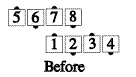
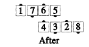
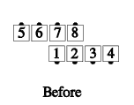
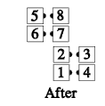

From a parallelogram (i.e., offset by one or more dancer positions, most commonly by 2): The dancers act as though they were in a 2x4 formation, but work to the spots where real dancers are.
Parallelogram Acey Deucey:
 
Common applications include late [sic], Split Circulate, In Roll Circulate, Walk & Dodge, Scoot Back, and Acey Deucey.
If the call is one that rotates the 2x4 formation (e.g. Counter Rotate 1/4), the formation becomes offset lines, waves, or columns (as appropriate to the call's ending formation), offset the same way the parallelogram was. For example: Parallelogram Bend the Line:
 
The percentage of offset is preserved, not necessarily the footprints.
© Copyright 1983, 1986-1988, 1995-2011 Bill Davis, John Sybalsky and CALLERLAB Inc., The International Association of Square Dance Callers. Permission to reprint, republish, and create derivative works without royalty is hereby granted, provided this notice appears. Publication on the Internet of derivative works without royalty is hereby granted provided this notice appears. Permission to quote parts or all of this document without royalty is hereby granted, provided this notice is included. Information contained herein shall not be changed nor revised in any derivation or publication.